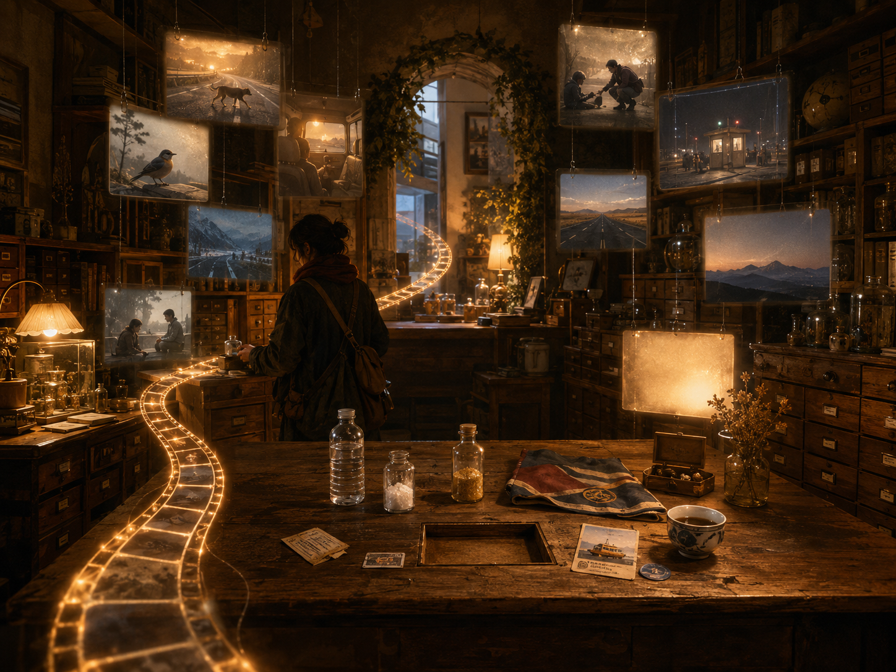

安靜的記憶放映室 Quiet Cinematic Memory Room

Invitation
What Left Here
如果可以收藏什麼，我其實已經收集很久了。
306 天的獨旅裡，我在每個國家找當地的水、收集旗、收集痕跡。後來才明白——我收集的不只是物件，是 memory。
有些來自我給自己的小任務：找水、找路、找下一個邊界、找繼續下去的勇氣。有些來自 incidents：一個陌生人、一個邊境官、一個微笑的孩子、一隻穿過馬路的動物。
人們說臨終時也許會有 replay mode，生命像一段很長的影片倒放。如果我的 replay 打開，它會很長——不只裝著大成就，而是滿滿的小幸福、小路、小錯誤、小善意、那些我沒有放棄的小瞬間。
我收藏，是因為某些瞬間值得被留下。當 replay video 來臨，願我能微笑著說：是的，這是一段很長的旅程，而我，真的好好活過。
— Tuzi · 21/06/2026
— invitation by Tuzi
Video
- Watch the video (MP4)